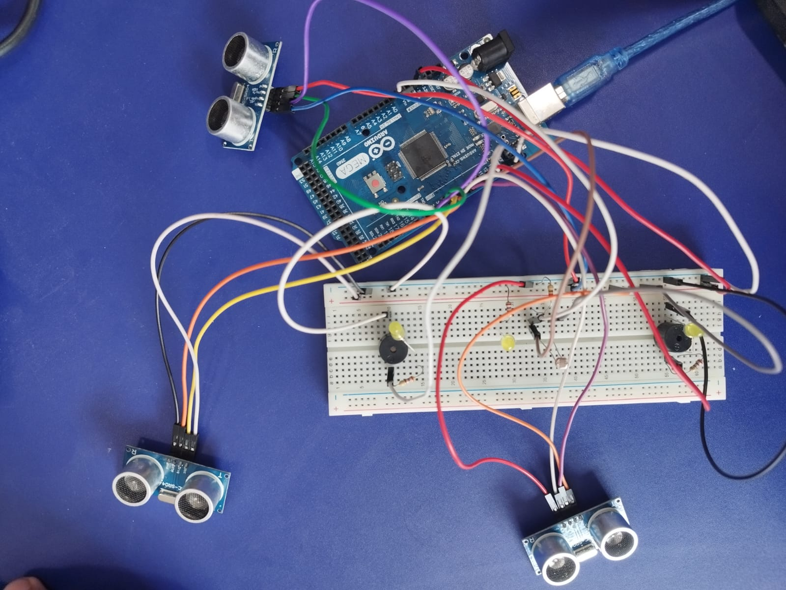

This is a
Product components

The smart cane prototype leverages state-of-the-art technology to enhance the independence and security of individuals with visual impairments. It incorporates advanced hardware components, including three ultrasonic sensors (left, right, and front-facing) to detect obstacles, an Arduino as the central processing unit, a breadboard for temporary circuit connections, LED lights to signal darkness, resistors to regulate electrical flow, piezo elements for directional alerts, photoresistors to respond to ambient light, and vibration motors to alert users. This hardware synergy allows the smart cane to provide real-time navigational support, auditory feedback for obstacle detection, and environmental information. Integrated GPS and mapping technology offer turn-by-turn directions, while the cane remains adaptable to different terrains, weather-resistant, and equipped with a long-lasting battery. The intuitive user interface makes it user-friendly, and real-time updates about road conditions and community integration features enhance its utility, ultimately improving the quality of life for individuals with visual impairments.